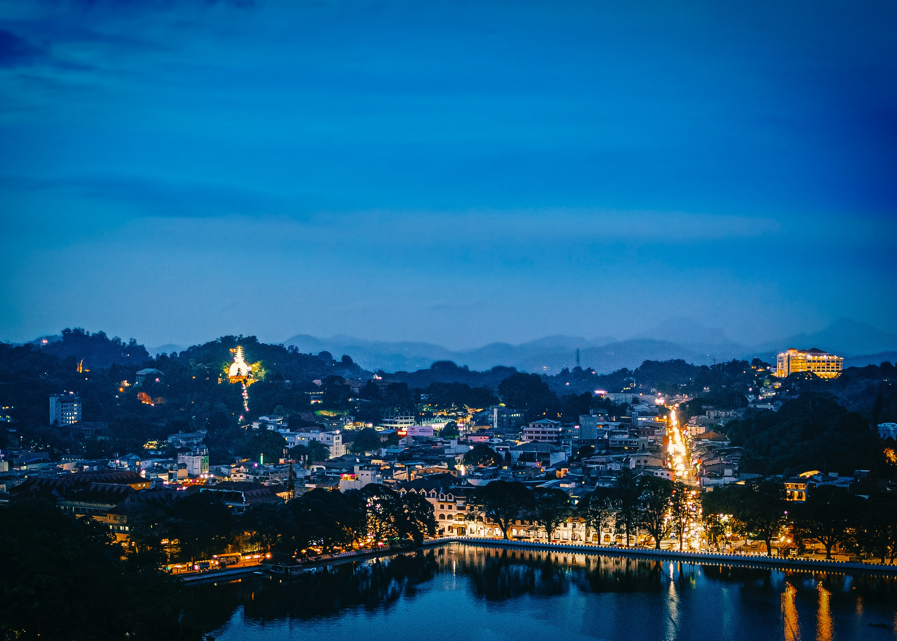

Temple of the Tooth is one of the most important shrines in Sri Lanka. The temple is said to house Buddha’s tooth. It is located north of Kandy Lake. Visitors and tourists are not allowed to see the tooth as it is stored in a gold casket shaped like Dagoba. Despite the sacred tooth being the main attraction, tourists also visit the temple to witness its splendid architecture.


The Royal Botanical Garden near Kandy is by far the largest and most impressive gardens in Sri Lanka. Decades ago, the garden was only reserved for the Kandyan loyalty. However today, tourists and locals are allowed inside. The entry fee into the garden is $6.


Kandy Lake is located in the centre of the city and you just can’t miss it. The lake is an oasis of calm. It was created in 1807 by the last ruler of the kingdom of Kandy. The Temple of the Tooth overlooks the lake. Though there’s not much to do here; you must visit the city’s iconic location. The scenery is pretty and you’ll just want to sit and stare at the river.


To the north of Kandy Lake is Udawattakele Sanctuary. It is famous for its twisting trees, swinging monkeys and bird watching. About 80 bird species have been recorded in the sanctuary.


If you want to witness the world’s most beautiful train ride, take a train through the green tea plantations of Nuwara Eliya or Ella. A ticket will cost you $3. The ride to the former takes 4 hours while the latter is 7 hours.

Nelligala International Buddhist Center is a Buddhist temple situated in Muruthalawa village in the Kandy district. Situated on top of a mountain, it is a popular place for sightseeing visitors and tourists due to its sheer beauty and amazing view of the surrounding landscape. It is a modern temple with its construction being commenced in 2015. The Nelligala International Buddhist Center is a popular site visited by both Buddhists and people from various other religions. It is a place which brings along peace and tranquility to its visitors. The gold color Buddha statues of the temple creates a unique and picturesque sight to see in contrast with the blue sky above. The temple includes sacred relics of Lord Buddha. The Nelligala International Buddhist Center is a short drive from the Kandy city and consists of many facilities such as wheelchair access in order to help pilgrims to reach the top comfortably.
The Hanthana mountain range in Kandy is popular among those who like to go hiking, camping, bird watching and be close to nature in any way.In total, there are seven individual peaks, the highest being Ura kanda. The peaks offer spectacular views of Kandy city, the Knuckles range, thedolosbage range of Aranayake, and the hills of the Sabaragamuwa region, too, can be spotted from here.